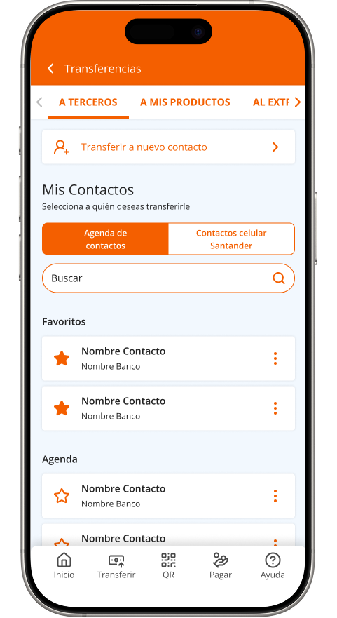

Rediseñar transferencias significó separar la navegación de la transacción.
La investigación mostró que concentrar tareas en menos pantallas no reducía el esfuerzo. Reorganicé el acceso a las funciones, dividí el formulario para nuevos destinatarios y mejoré el comprobante. Tras las pruebas y ajustes con desarrollo, la nueva experiencia se lanzó gradualmente en 2025; el patrón de navegación se adoptó también en otros módulos.
